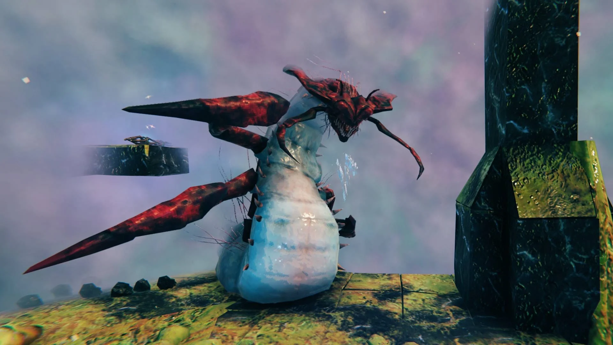

Valheim The Game Made By A Small Studio That Is Better Than Most Games That Are Made Today
You wont regret spending $20 dollars on this game
By Andrew Miracle Published 5 hours ago

Valheim is an amazing game made by gaming enthusiasts who work full-time jobs. This video game was a passion project based on Viking-era articles and weaponry. The team had plenty
of inspiration considering they are based in Sweden. My favorite part of Valheim is the fact that you can explore a massive world to your fullest potential. The game has a lot
to offer in terms of story. The game is entirely based on folklore with its own twist on the tales from past thousands of years. The game is based on purgatory. It is in the Viking's belief of purgatory. Your whole objective is to survive and keep fighting for Odin to free Valheim from the monsters. Funny enough the name of the game "Valheim" stands for a fictional tenth world within the world tree Yggdrasil in Norse mythology. You can actually
see the tree branches in the sky when you are exploring. They are everywhere in certain parts of the map. The even more amazing thing about Valheim is they are constantly adding content and fixing their game.
The ironic part is these gentlemen work full-time jobs maybe even more than the average 40 hours a week and they have a game better than most triple-A studios. You can definitely see in every aspect of their game how much passion and time they put in over the years.

How does Valheim differ from other survival games? The best part of Valheim is how you can use anything and everything at your disposal. You can play ranged with a bow and arrow, two-hander, sword and board, and staff (As in a mage-like class).
The best part of Valheim is no matter how much time you have to play games even 10 mins a day you can always pause and come back the next day. You can also play this game online with other people on their saved games with the character you load over. Another great thing about Valheim
is that you can have hundreds of hours worth of game content packed in at a price of $20 dollars(When it goes on sale you can usually get it for around $12 to $15).